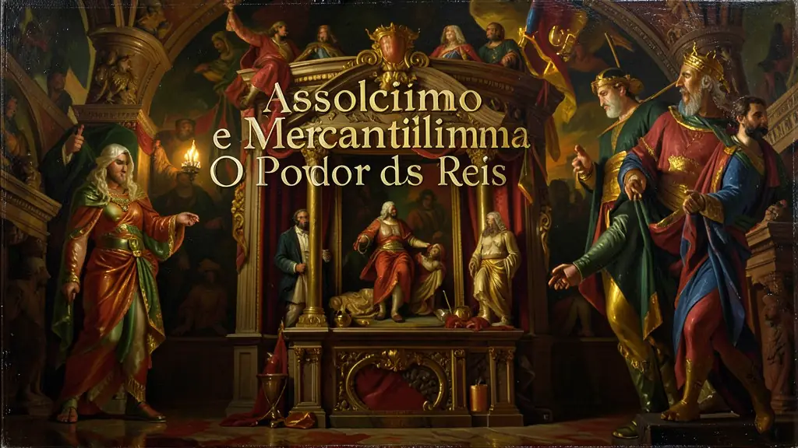
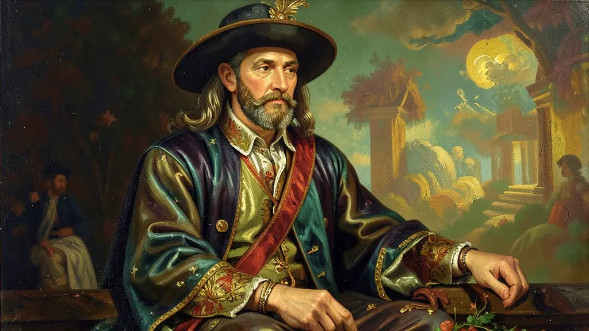
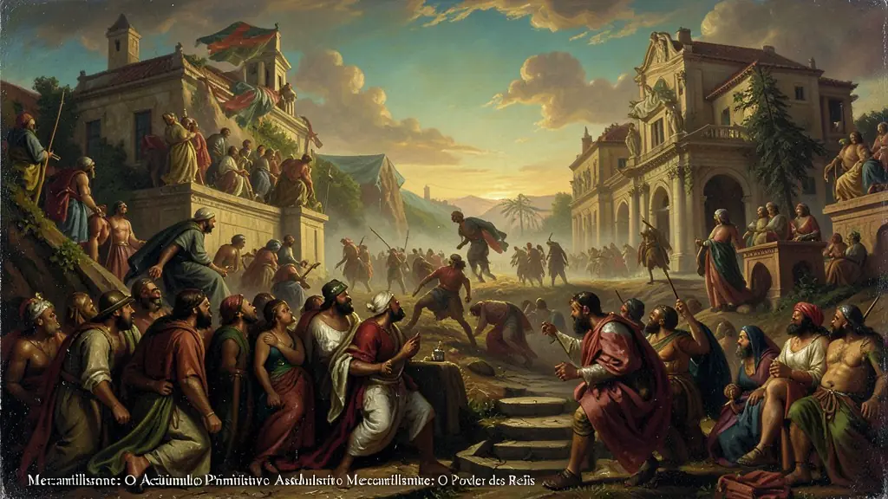

Capítulo 01
1. Maquiavel e Hobbes: A Razão de Estado
Antes de Maquiavel, o bom rei deveria ser um bom cristão. Ele mudou isso: o bom rei é aquele que mantém o poder, mesmo que precise agir de forma cruel. 'É melhor ser temido do que amado'. Já Hobbes dizia que o homem é naturalmente violento ('o lobo do homem'). Para não morrermos em brigas eternas, entregamos nossa liberdade ao Rei em troca de ordem. O Estado Absoluto não era apenas um desejo dos reis, mas um pedido de silêncio da burguesia cansada das guerras feudais.

Capítulo 02
2. Bossuet e o Direito Divino
Se Maquiavel falava de política, Bossuet usava a Bíblia. Ele dizia que o Rei era escolhido por Deus e que desobedecer ao monarca era pecado mortal. Esse argumento calava as rebeliões camponesas e a própria nobreza. O palácio de Versalhes era o grande cenário desse teatro de poder: tudo girava em torno do Rei, desde o seu despertar matinal até os jantares suntuosos iluminados pela luz do Sol de sua glória.

Capítulo 03
3. Mercantilismo: O Acúmulo Primitivo
Os reis precisavam de exércitos caros e burocratas. De onde vinha o dinheiro? Do comércio marítimo. O Mercantilismo acreditava que a riqueza do mundo era fixa; se um país ganhava, outro perdia. Por isso, a obsessão pelo 'Metalismo' (ouro no cofre). As metrópoles proibiam suas colônias de produzirem artigos manufaturados, garantindo que o lucro final sempre ficasse na Europa - o chamado Colonialismo.

Capítulo 04
4. O Pacto Colonial: O Brasil Acorrentado
O Brasil não podia ter fábricas, jornais ou universidade por causa das regras mercantilistas de Portugal. Éramos o quintal extrativista: açúcar, ouro e algodão saíam a preço de custo e voltavam como produtos caros de Portugal. Esse sistema garantiu que o Brasil crescesse dependente do mercado externo, criando uma elite agrária que olhava apenas para a Europa enquanto o povo trabalhava sob o chicote.
Capítulo 05
5. A Crise do Modelo: O Iluminismo
No final do século XVIII, as ideias de liberdade (Iluminismo) começaram a atacar o Absolutismo. Os reis viraram 'déspotas esclarecidos', tentando modernizar seus reinos sem abrir mão do poder (como o Marquês de Pombal em Portugal). Mas era tarde demais: o sistema não aguentava mais as novas demandas da Revolução Industrial e da burguesia ascendente. O relógio dos reis absolutos estava chegando à sua hora final com a Revolução Francesa.
O Absolutismo Monárquico foi o sistema político que marcou a transição da Idade Média para a Moderna, caracterizado pela concentração total de poder nas mãos do soberano. Segundo a teoria do Direito Divino de Jacques Bossuet, o rei era o representante de Deus na Terra, e contestar sua autoridade era um sacrilégio. O Estado Absolutista foi o instrumento que a burguesia e a nobreza utilizaram (cada uma a seu modo) para garantir a ordem interna e a expansão comercial, superando a fragmentação feudal.
O Mercantilismo foi o braço econômico do Absolutismo, um conjunto de práticas que visava o enriquecimento do Estado através do acúmulo de metais preciosos (metalismo) e da busca por uma balança comercial favorável. O Protecionismo e o Exclusivo Comercial (pacto colonial) eram ferramentas essenciais para garantir que a riqueza circulasse apenas dentro do império, financiando os luxos da corte e a manutenção de exércitos permanentes que garantiam a soberania do monarca.
Para o Enem, o Absolutismo deve ser entendido como a base do 'Antigo Regime', que seria posteriormente derrubado pelas revoluções iluministas. Figuras como Luís XIV, o 'Rei Sol', simbolizam o apogeu dessa estrutura onde 'L'État c'est moi' (O Estado sou eu). A compreensão desse período é fundamental para analisar como a centralização do poder permitiu as Grandes Navegações e a colonização da América, moldando a economia global moderna.
Fonte: ANDERSON, Perry. Linhagens do Estado Absolutista. São Paulo: Brasiliense, 1989.
Atividades interativas
Questões para fixar
O teórico político Nicolau Maquiavel, em sua obra 'O Príncipe', defende que a principal função do governante é:
A prática mercantilista da 'Balança Comercial Favorável' consistia em qual estratégia econômica pelas metrópoles europeias?
Qual foi o principal objetivo do Mercantilismo como política econômica adotada pelos reis absolutistas?
Quem é o teórico político que defendeu a ideia de que o Estado deve ser acima da moral?
Qual foi o papel do Brasil no sistema mercantilista português?